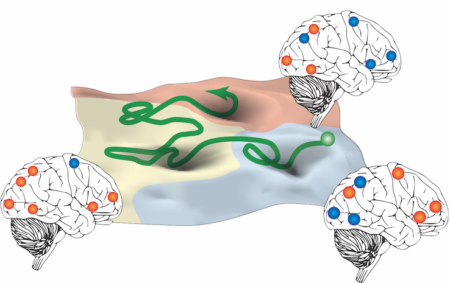

About Naoki Masuda
Affiliation etc.
Find me on
 Interview by Society for Mathematical Biology
Interview by Society for Mathematical Biology
My main research interests are network science and mathematical biology, which overlap on top of each other. Let me briefly overview them and provide links to my representative work in each field.
Research interest 1: Network science
Networks are fun. Some resources
Some resources
- Network Science Society
- A book available free online by A. -L. Barabási:
Network Science
- NetworkX, a free software for network analysis
- Network Science Institute at Northeastern University
 temporal nerworks
temporal nerworks
Many networks are better considered to vary over time than being static. Or, specific times of contacts between two nodes may matter as much as the fact that the two nodes are directly connected by an edge. Such a temporal network view may change what has been known for static networks (e.g., how epidemics spread on networks). As network data with time stamps of events are increasingly available, we need develop algorithmic and statistical tools to analyze such temporal network data as well as mathematical/computational models to understand them including dynamical processes (e.g., contagion processes) on temporal networks.
- Naoki Masuda, Renaud Lambiotte.
A Guide to Temporal Networks.
World Scientific, Singapore (2020).
(The first edition was published in 2016.)
- Marinho A. Lopes, Jiaxiang Zhang, Dominik Krzemiński, Khalid Hamandi, Qi Chen, Lorenzo Livi, Naoki Masuda.
Recurrence quantification analysis of dynamic brain networks.
European Journal of Neuroscience, Early View article available (2020).
Preprint: arXiv:2001.03761
- Naoki Masuda, Petter Holme.
Detecting sequences of system states in temporal networks.
Scientific Reports, 9, 795 (2019). [open access]
Python and MATLAB codes
Short introduction to this research
日本語の研究紹介 (in Japanese)
- Naoki Masuda, Luis E. C. Rocha.
A Gillespie algorithm for non-Markovian stochastic processes.
SIAM Review, 60, 95-115 (2018). [open access]
C/C++ codes for the Laplace Gillespie algorithm, one to generate positively correlated inter-event times etc.
Short introduction to this research
日本語の研究紹介 (in Japanese)
- Naoki Masuda, Konstantin Klemm, Víctor M. Eguíluz.
Temporal networks: slowing down diffusion by long lasting interactions.
Physical Review Letters, 111, 188701 (2013). [open access]
 Epidemic processes on networks
Epidemic processes on networks
Understanding and intervening into epidemic processes occurring on networks is a major topic in network science due to its societal needs (including the case of information spreading in online media). I have been working on ``network epidemiology' both for temporal and static networks.
- Naoki Masuda, Petter Holme. (Editors)
Temporal Network Epidemiology.
Springer, Singapore (2017).
On Amazon
- Naoki Masuda, Joel C. Miller, Petter Holme.
Concurrency measures in the era of temporal network epidemiology: A review.
Preprint: arXiv:2012.13317
- Tomokatsu Onaga, James P. Gleeson, Naoki Masuda.
Concurrency-induced transitions in epidemic dynamics on temporal networks.
Physical Review Letters, 119, 108301 (2017). [open access]
Download presentation slides
- Naoki Masuda, Petter Holme.
Predicting and controlling infectious disease epidemics using temporal networks.
F1000Prime Reports, 5, 6 (2013). [open access]
- Naoki Masuda.
Immunization of networks with community structure.
New Journal of Physics, 11, 123018 (2009). [open access]
- Taro Ueno, Naoki Masuda.
Controlling nosocomial infection based on structure of hospital social networks.
Journal of Theoretical Biology, 254, 655-666 (2008). [open access]
Research interest 2: Mathematical biology
There are a plenty of opportunities for mathematics to be used for biological and medical questions including data analysis. Reflecting the width of biology itself, mathematical biology is a broad discipline. I focus on the following topics in mathematical biology.
 Behavioral biology
Animal individuals in the same group interact with each other to be able to perform collective tasks such as nest selection in the case of ants. I am engaged in network analysis and mathematical modeling of such collective behavior of animals.
Behavioral biology
Animal individuals in the same group interact with each other to be able to perform collective tasks such as nest selection in the case of ants. I am engaged in network analysis and mathematical modeling of such collective behavior of animals.
- Gabriele Valentini, Naoki Masuda, Zachary Shaffer, Jake R. Hanson, Takao Sasaki, Sara Imari Walker, Theodore P. Pavlic, Stephen C. Pratt.
Division of labor promotes the spread of information in colony emigrations by the ant Temnothorax rugatulus.
Proceedings of the Royal Society B: Biological Sciences, 287, 20192950 (2020).
Preprint: https://doi.org/10.1101/791996
Featured by ASU Now
Video
- Thomas A. O'Shea-Wheller, Naoki Masuda, Ana Sendova-Franks, Nigel R. Franks.
Variability in individual assessment behaviour and its implications for collective decision-making.
Proceedings of the Royal Society B: Biological Sciences, 284, 20162237 (2017).
Featured by New Scientist
- Naoki Masuda, Thomas A. O'Shea-Wheller, Carolina Doran, Nigel R. Franks.
Computational model of collective nest selection by ants with heterogeneous acceptance thresholds.
Royal Society Open Science, 2, 140533 (2015). [open access]
- Hiroyuki Shimoji, Masato S. Abe, Kazuki Tsuji, Naoki Masuda.
Global network structure of dominance hierarchy of ant workers.
Journal of the Royal Society Interface, 11, 20140599 (2014). [open access]
Download presentation slides
Dominance network data are available at the journal's website.
日本語の研究紹介 (in Japanese)
 Energy landscape analysis
Energy landscape analysis
This is a method which we have been developing to understand multichannel dynamical data (i.e., multidimensional time series, which does not have to be obtained from a biological system) such as brain signals recorded at multiple regions of interest. The method aims to comprehend data as a dynamics among a small number of relatively stable states.
|  | |
| Fig: Schematics of brain dynamics during bistable perception. Magenta: visual-area state. Blue: frontal-area state. Yellow: intermediate state. A colored circle represents activity of regions of interest in each of the three attractive basins (red: high, blue: low). The green curve represents brain dynamics. | |
- Takahiro Ezaki, Elohim Fonseca dos Reis, Takamitsu Watanabe, Michiko Sakaki, Naoki Masuda.
Closer to critical resting-state neural dynamics in individuals with higher fluid intelligence.
Communications Biology, 3, 52 (2020). [open access]
C code (the code to gather outputs stored in different files is in Python)
- Takahiro Ezaki, Michiko Sakaki, Takamitsu Watanabe, Naoki Masuda.
Age-related changes in the ease of dynamical transitions in human brain activity.
Human Brain Mapping, 39, 2673-2688 (2018). [open access]
- [A review paper]
Takahiro Ezaki, Takamitsu Watanabe, Masayuki Ohzeki, Naoki Masuda.
Energy landscape analysis of neuroimaging data.
Philosophical Transactions of the Royal Society A, 375, 20160287 (2017). [open access]
MATLAB code for calculating and visualizing energy landscapes is availble here.
MATLAB code to calculate the maximum-likelihood estimator is also available as the supplementary material of the paper.
- Takamitsu Watanabe, Naoki Masuda, Fukuda Megumi, Ryota Kanai, Geraint Rees.
Energy landscape and dynamics of brain activity during human bistable perception.
Nature Communications, 5, 4765 (2014). [open access]
MATLAB code for calculating and visualizing energy landscapes is availble here.
MATLAB code to calculate the maximum-likelihood estimator is also available as the supplementary material of one of our papers.
日本語の研究紹介 (in Japanese)
- Takamitsu Watanabe, Satoshi Hirose, Hiroyuki Wada, Yoshio Imai, Toru Machida, Ichiro Shirouzu, Seiki Konishi, Yasushi Miyashita, Naoki Masuda.
A pairwise maximum entropy model accurately describes resting-state human brain networks.
Nature Communications, 4, 1370 (2013). [open access]
Unofficial errata
MATLAB code to calculate the maximum-likelihood estimator is also available as the supplementary material of one of our papers.
 Evolution of other mechanisms of cooperation
Evolution of other mechanisms of cooperation
Evolutionary and other mechanisms of cooperation in soial dilemma situations have been a long-standing theme in mathematical biology. Nowadays, our understanding of this phenomenon is much enriched by behavioral experiments with humans and animals as well.
- Genki Ichinose, Naoki Masuda.
Zero-determinant strategies in finitely repeated games.
Journal of Theoretical Biology, 438, 61-77 (2018). [open access]
- Takahiro Ezaki, Yutaka Horita, Masanori Takezawa, Naoki Masuda.
Reinforcement learning explains conditional cooperation and its moody cousin.
PLOS Computational Biology, 12, e1005034 (2016). [open access]
日本語の研究紹介 (in Japanese)
- Takamitsu Watanabe, Masanori Takezawa, Yo Nakawake, Akira Kunimatsu, Hidenori Yamasue, Mitsuhiro Nakamura, Yasushi Miyashita, Naoki Masuda.
Two distinct neural mechanisms underlying indirect reciprocity.
Proceedings of the National Academy of Sciences of the United States of America, 111, 3990-3995 (2014). [open access]
Featured by Le Scienze (in Italian)
Press release (in Japanese)
- Naoki Masuda.
Ingroup favoritism and intergroup cooperation under indirect reciprocity based on group reputation.
Journal of Theoretical Biology, 311, 8-18 (2012). [open access]
- Mitsuhiro Nakamura, Naoki Masuda.
Indirect reciprocity under incomplete observation.
PLOS Computational Biology, 7 (7), e1002113 (2011). [open access]
En español
Hablo español y me encanta viajar a España y países latinoamericanos. Me alegraré en tener estudiantes o posgrados que tengan interés en redes complejas o biología matemática (incluyendo redes en neurociencia). Si te interesa venir a mi centro de investigación, lee la información en ingrés arriba.
Aunque hablo inglés mucho mejor que español, no tengo problema en divertirme en español. Científicamente también, soy capaz de discutir en espanñol (pues, quizás estoy exagerando; solía hablar español mejor antes), que es lo que hago cuando veo investigadores latinos en conferencias. Mantengo la comunicación con investigadores latinos.
Aquí hay un articulo en español introduciendo nuestro trabajo [Speidel, Klemm, Eguíluz, Masuda. New Journal of Physics, 2016)]:
Importa cómo es la secuencia de las interacciones.
Revista Española de Física, Vol. 30, No. 4, 27-28 (2016).
No lo escribí yo...
Me he ubicado a los Estados Unidos en 2019. Espero que aquí hay más oportunidades de hablar castellano que antes.